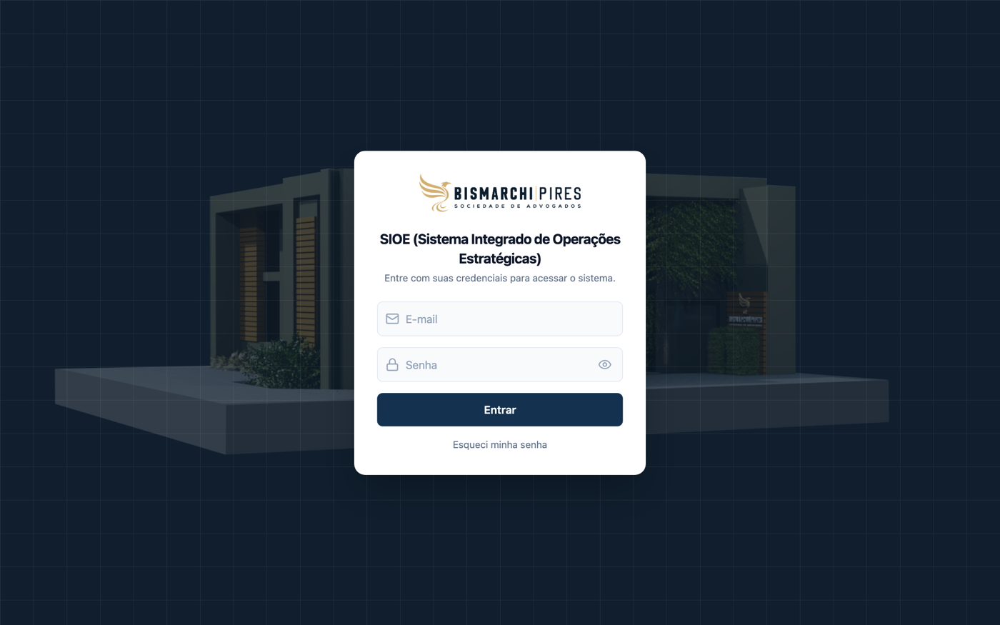
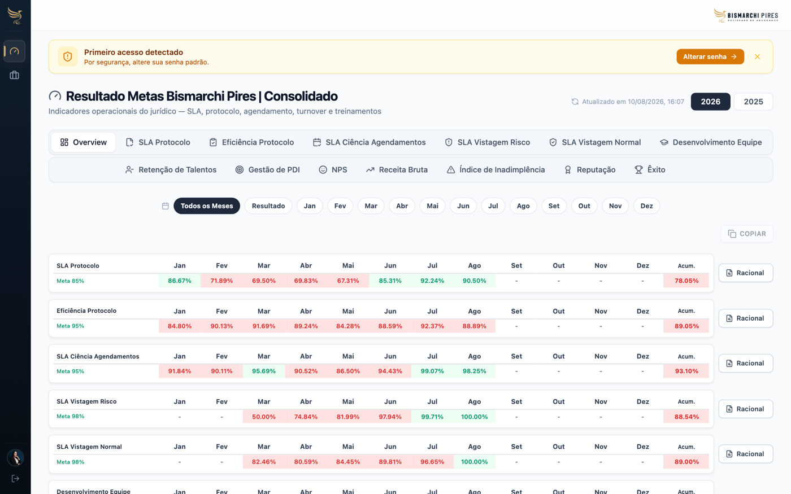
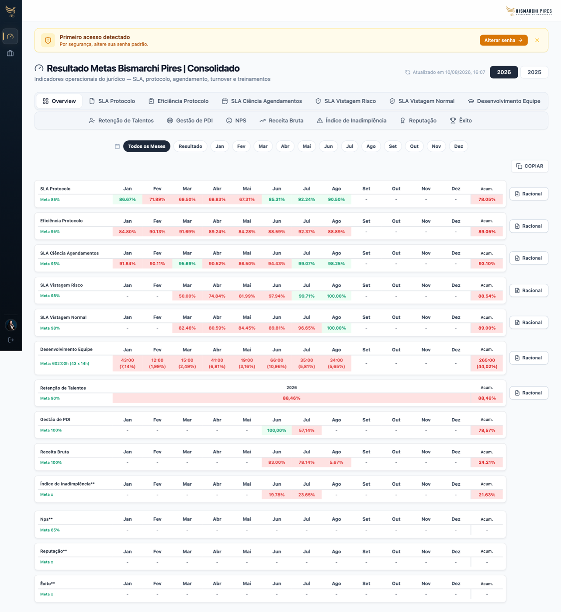
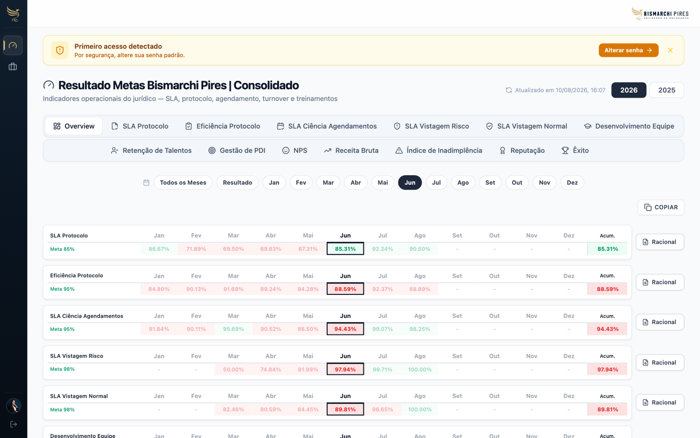
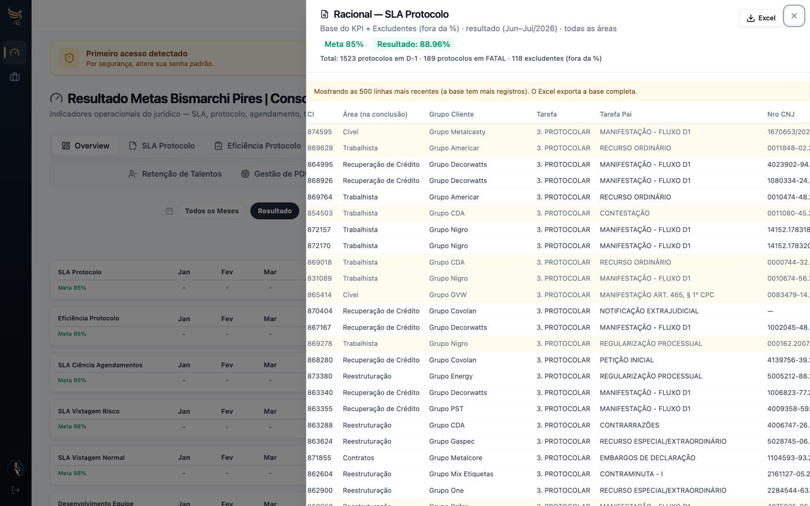
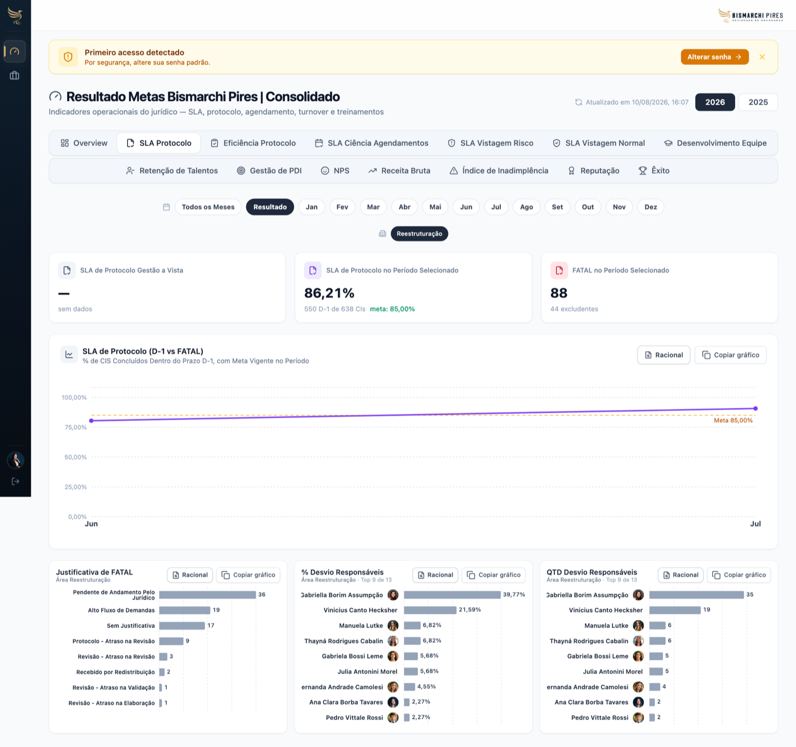
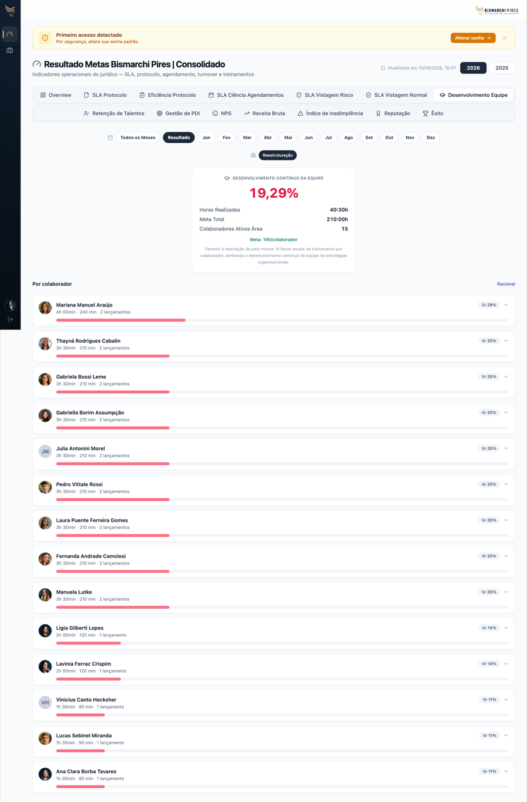

Para: Lavínia Ferraz Crispim · Coordenadora · Reestruturação
Olá, Lavínia! Este guia mostra onde clicar e o que cada indicador significa na tela Resultado Metas Bismarchi Pires.

No primeiro acesso, use o aviso amarelo Alterar senha → para trocar a senha padrão.
Você cai direto nesta tela. Cada linha é um indicador; as colunas são os meses + Acum.

Verde = meta atingida Vermelho = abaixo da meta “-” = sem dado



Clique na aba SLA Protocolo. Aparecem cards, gráfico D-1 vs FATAL, justificativas e ranking de responsáveis. Use Racional / Copiar gráfico em cada bloco.

Outro exemplo — Desenvolvimento Equipe:

| Indicador | Meta | Significado |
|---|---|---|
| SLA Protocolo | 85% | % de protocolos no prazo (D-1 / FATAL), sem excludentes. |
| Eficiência Protocolo | 95% | Eficiência do fluxo de protocolo (meta mais exigente). |
| SLA Ciência Agendamentos | 95% | % de ciências de agendamento no prazo. |
| SLA Vistagem Risco | 98% | % de publicações de risco vistadas no prazo (com vistador). |
| SLA Vistagem Normal | 98% | % de publicações normais vistadas no prazo. No consolidado, Trabalhista fica fora. |
| Desenvolvimento Equipe | 100% | Minutos de treinamento lançados vs. meta. |
| Retenção de Talentos | 90% | Indicador anual de retenção. |
| Gestão de PDI | 100% | Acompanhamento dos PDIs da equipe. |
| Receita Bruta | 100% | % de atingimento da meta de receita. |
| Índice de Inadimplência** | Meta x | Acompanhamento financeiro (série no Overview). |
| NPS** / Reputação** / Êxito** | — | Reservados no BI; ainda sem série no Overview. |
Overview = consolidado de todas as áreas. Nas abas de detalhe, sua visão fica em Reestruturação.